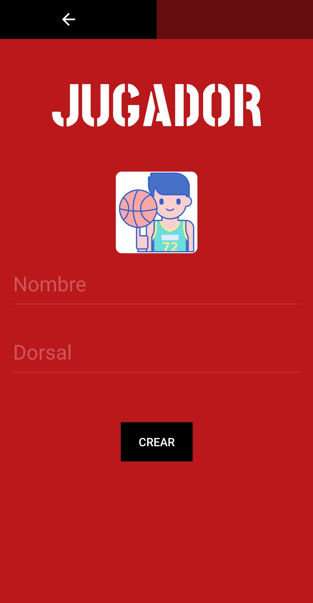
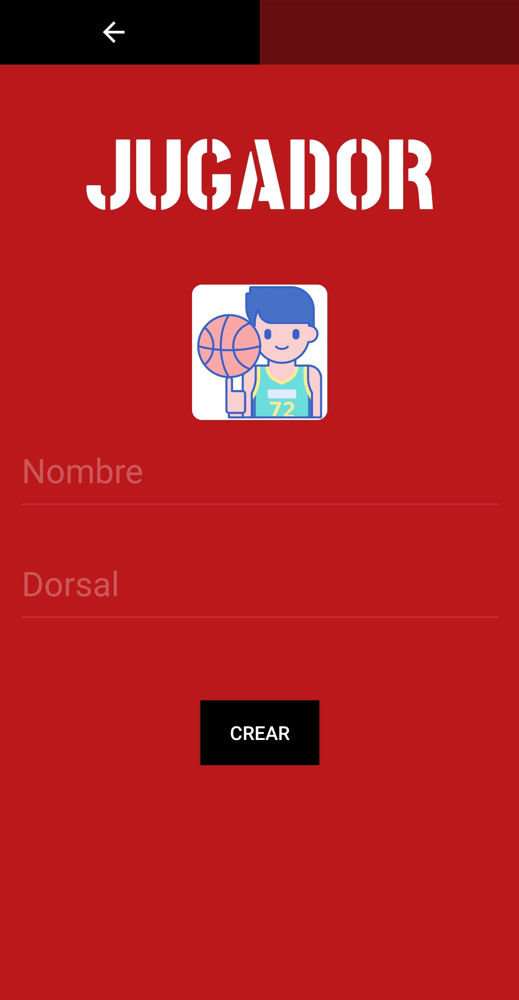
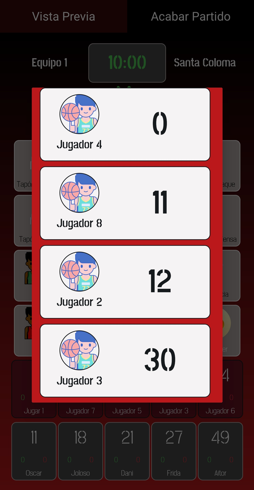
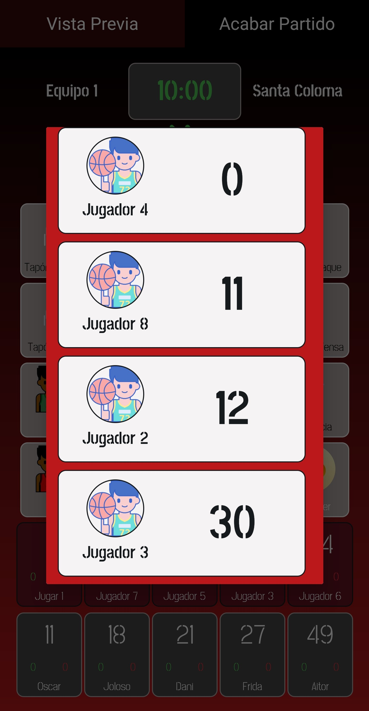

Descarga la aplicación
Descripción
Stats On es una aplicación que recopila las estadísticas de un partido de baloncesto. Está enfocada para el Club Básquet Santa Coloma. Con una interfaz simple e intuitiva podrás crear tus equipos, jugadores y partidos y tener todos los datos de tus partidos guardados para consultarlos siempre que lo necesites.
Manual de usuario
- Crear y borrar equipos
- Crear y borrar jugadores
- Crear partido
- Consulta de datos
- Opciones y cerrar sesión
Para crear equipos deberá de acceder a "Equipos rivales" en el menú. Por defecto, "mi equipo" es siempre Santa Coloma. Una vez en la pantalla de equipos rivales deberá presionar sobre el botón "Añadir". Esto le llevará a una pantalla donde se elegirá una imagen y un nombre para el nuevo equipo. Hecho esto, presiona sobre el botón "Crear" que le regresará a la pantalla anterior con su nuevo equipo ya creado.
Para eliminar equipos deberá ir a la pantalla de "Equipos rivales" y mantener pulsado sobre el equipo deseado. Acto seguido aparecerá un mensaje que dirá si está seguro de querer eliminar a ese equipo y confirmará para eliminarlo.
Para crear jugadores en un equipo se deberá acceder desde el menú principal a "Mi equipo" o ir a "Equipos rivales" y seleccionar un equipo rival ya creado. Una vez haya seleccionado su equipo o uno rival se verán los jugadores del equipo seleccionado. Una vez aquí para añadir un jugador presionará sobre el botón "Añadir jugador" que le llevara a un pantalla donde se elegiría una imagen, un nombre y un dorsal para el nuevo jugador. Hecho esto, presiona sobre el botón "Crear" que lo devolverá a la pantalla del equipo con su nuevo jugador ya creado.
 

Para eliminar jugadores deberá ir al equipo del jugador que quiera eliminar y matener pulsado sobre ese jugador. Aparecerá un mensaje que dirá si está seguro de querer eliminar a ese jugador y confirmará para eliminarlo.
Para crear un partido desde el menú principal debe ir a "Partido nuevo". En la siguiente pantalla deberá elegir el equipo rival y si es local o visitante. A continuación elegirá los 5 jugadores titulares de su equipo y del equipo rival.


Hecho esto llegará a la pantalla con la que interactuará para rellenar las estadísticas del partido. Para empezar el partido deberá presionar el botón play/pause que está ubicado debajo de tiempo este botón iniciará y parará el tiempo para cuando comience el partido y los tiempos muertos. Para que un jugador haga una de las 16 acciones disponibles se deberá seleccionar a ese jugador y luego la acción deseada. Los botones de las acciones son intuitivos, ya que hacen lo que su nombre indica excepto el botón "Deshacer" que se utilizará para de-seleccionar un jugar presionado por error para poder seleccionar otro. Para realizar un cambio de jugadores deberá de mantener presionado sobre el jugador que desea cambiar. Si hace esto aparecerá una pantalla emergente y ahí se podrá elegir el jugador que quiera que salga a jugar. Por último, pulsa el botón de "Vista previa" si desea que muestre una tabla con las estadísticas del partido en tiempo real.
 


Para consultar los datos de los jugadores desde el menú principal debe ir a "Mi equipo" o "Equipos rivales". Seleccionaremos el equipo deseado y seguidamente al jugador deseado. Esto lo llevará a una pantalla con las estadísticas del jugador seleccionado.
Para consultar los datos de un partido desde el menú principal se debe ir a "Partidos". Esto lo llevará a una pantalla con el listado de todos los partidos realizados. Hay que seleccionar el partido deseado y esto lo llevará a una pantalla con una tabla de las estadísticas del partido seleccionado en la que se puede compartir un archivo .CSV con los datos del partido o descargarlo a través del enlace.


Para cambiar las opciones y cerrar sesión desde el menú principal debe ir a "Opciones". Lo llevará a una pantalla donde podrá cambiar los minutos del partido, el número de periodos y los minutos de la prórroga. También podrá cerrar sesión con el botón "Cerrar sesión".